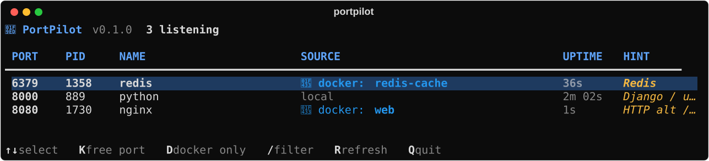

🔎
See every port
A live table of every listening port with PID, name, user, uptime and bind address. Refreshes every 2 s.
PortPilot shows who is on every port, including which Docker container is behind it, and frees the port when you press K. No more netstat, copying PIDs or hunting through Task Manager.
pip install portpilot-cliPython 3.10+ · free and open source (MIT) · Docker optional
the problem
Your app won't start because something is already on its port. Usually it's a container you forgot about.
5 tools, 5 minutes
1 screen, 5 seconds
features
Port, PID, process, container, user, uptime and what the port is usually for, all in a live table.
A live table of every listening port with PID, name, user, uptime and bind address. Refreshes every 2 s.
Shows which container owns a port (docker: kafka-1), not just docker-proxy or com.docker.backend.
Select a row and press K. Containers get docker stop; processes are asked to exit politely first.
portpilot 9092 answers "who is on 9092?" with the full command line and the container image.
Always asks first, and refuses to touch system processes like svchost.exe, launchd or sshd.
--json output, and exit codes that answer "is this port busy?": portpilot 5432 || docker compose up -d
real output
Captured from PortPilot itself with a Redis and an nginx container and a local Python server.

install & use
Works in PowerShell, Windows Terminal, macOS Terminal and any Linux shell.
pip install portpilot-cliinstall from PyPI (the command is still portpilot)portpilotlive table of every listening portportpilot 9092who is using port 9092?portpilot kill 9092free port 9092 (asks first)portpilot --dockeronly ports owned by Docker containersportpilot --jsonmachine-readable output for scripts| ↑ ↓ | select a row |
| K | free the selected port (asks y/N) |
| D | toggle Docker only |
| / | filter by port, name or container |
| R | refresh now |
| Q | quit |
Tip: on macOS and Linux run sudo portpilot to see other users' processes; on Windows, an Administrator terminal shows system services.
how it works
No daemon, no background service, no telemetry. It reads the OS socket table, asks Docker, draws a table and exits.
-y).System, lsass.exe, launchd, systemd and sshd.pip install portpilot-cli